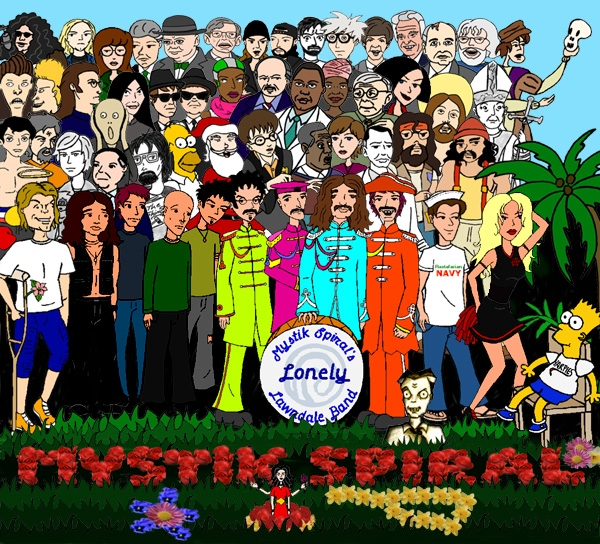

Picture designed by jak981125 and Kemical Reaxion, drawn by Kemical Reaxion
KEY:
Top Row: Howard Stern (a radio personality), Kurt Cobain (a musician), Daria (a cartoon character), Bill Clinton (a former president), Winston Churchill (a former prime minister), Stephen Hawking (a genius), Jay (a troublemaker), Silent Bob (another troublemaker), Tom Green (a comedian), Andy Warhol (an artist), Paul McCartney (a musician), Billy Graham (a preacher), Gorbachev (a former premier), Jerry Garcia (a musician), Hamlet (a disturbed dude with a skull in his hand)
Second Row: Butt-head (a cartoon character), Beavis (a cartoon character), John Lennon (a musician), "The Scream" (a painting), Yoko Ono (an artist), Blues Brothers (on a mission from God), Dennis Rodman (an athlete), Dennis Franz (an actor) , Andre Braugher (an actor), Maya Angelou (a writer), George Burns (an actor), Jane (a cartoon character), Jesus (our Lord), John Paul II (a pope)
Third Row: Sylvester Stallone (an actor), Charles Manson (a serial killer), Beck (a musician), Rush Limbaugh (a conservative), Stephen King (a writer), Homer Simpson (a cartoon character), Santa Claus (a philanthropist), Harry Potter (a wizard), Bill Cosby (an actor), Kemical Reaxion (a godsend), Forrest Gump (a movie character), Tommy Chong (an actor), Cheech Marin (an actor)
Front Row: Tommy Sherman (a ghost), Mystik Spiral wax figures, Trent Lane (dressed as John Lennon), Max Tyler (dressed as Ringo Starr), Jesse Moreno (dressed as Paul McCartney), Nick Campbell (dressed as George Harrison), a statue of DeMartino (at Nick's feet), jak981125 (a lunatic), Pamela Anderson (an actress), a Bart Simpson doll with a "Harpies" T-shirt
Below the words "Mystik Spiral" is a Monique figurine, India-style.
The setting: The Zon Club, Lawndale
Slightly after sunset, October 20, 2001
A large crowd of young people are walking into the club. Among them are a few familiar faces from Lawndale High School. A marquee nearby reads "Mystik Spiral's Lonely Lawndale Band: A benefit concert for victims of 9-11."
The club is jam-packed with people. A small orchestra is taking up a lot of room up front. A makeshift stage that is slightly higher than the Zon stage has been constructed up front. The doors close and the lights dim. A spotlight shines on the stage and a familiar figure steps out but she's not looking so familiar. It's Daria, but she is wearing contact lenses, a little bit of make up, a suit jacket, shirt, and tie all belonging to her father, blue jeans, and her usual boots (the pant legs are over the outside of the boots cause otherwise that would look really funky but then again what do I know about fashion...hmm, wasn't I telling a story here? Oh yeah...).
Daria: Hello and welcome everyone. I am your mistress of ceremonies tonight, Daria Morgendorffer. When the boys first asked me if I would be willing to MC tonight's show I wondered if they had inhaled too much carbon monoxide from that van of theirs. I don't have the right personality for a bingo caller much less the MC at a charitable event. But what the heck, it's for a good cause. I just hope I'll be that optimistic when I'm done making a total fool out of myself.
Now a word or two about tonight's show. What you are about to see is a parody concert done as a loving tribute to the classic Beatles album, Sgt. Pepper's Lonely Hearts Club Band. It was and is an artistic masterpiece considered to be quite possibly the greatest rock experience of all time. It is a true work of artistic beauty. What you are about to see is not. We admit that. Tonight's performance is no masterpiece, but we're just here to have a little fun and raise money for a good cause.
The concept of Sgt. Pepper was a fantasy concert performed before great figures in history. There are no historical figures here tonight, perhaps a few future pro wrestlers, but that's all. However, you get more than a concert tonight. There will be performances between songs. Not only that but the band decided to add parodies of three songs that were made during the Sgt. Pepper sessions but were used elsewhere and never made it to the album. Halfway through, we will have a tribute to the artist who helped us out so very much in preparing for tonight. Oddly enough, it wasn't Jane.
Jane (from backstage): I have no brother!
Daria: So it seems we're ready to go. (curtains close behind her) Sit back and enjoy. A splendid time is guaranteed for all. No refunds.
The orchestra tunes up. Then the curtains slowly open to reveal the members of Mystik Spiral wearing re-created Sgt. Pepper uniforms. They are also wearing fake mustaches and Trent (dressed as John Lennon) is wearing glasses (the lenses of which have been removed for the time being). The music begins, and baby, it's LOUD!
SONG--Mystik Spiral's Lonely Lawndale Band
sung to the tune of "Sgt. Pepper's Lonely Hearts Club Band"
Jesse (singing):
It was a couple weeks ago today
That our band was nearly DOA
And so it seemed we had to change our style
Or we'd have to go into exile
So let me introduce to you
The band that brain-dead people fear
Mystik Spiral's Lonely Lawndale Band!
Entire Band (singing):
We're Mystik Spiral's Lonely Lawndale Band
We hope you will enjoy the show
Mystik Spiral's Lonely Lawndale Band
We locked the doors so none of you can go
Mystik Spiral's Lonely
Mystik Spiral's Lonely
Mystik Spiral's Lonely Lawndale Band!
We're lucky just to be here
It's really such as blast
Please open up your homes to us
We've had enough of homelessness
Our van makes a bad home
Jesse (singing):
I don't really want to stop the show
But I figured that you'd want to know
That our drummer wants to sing a song
But we promise you he won't be long
So let me introduce to you
The one and only Max Tyler
And Mystik Spiral's Lonely Lawndale Band!
Entire Band (singing):
Maaaaaaaax Tyyyyyyyyylllleeeeerrr!
SONG--A Little Help From My Friends
sung to the tune of "With A Little Help From My Friends"
Max (singing):
What would you do if I ran out of cash
Would you skip town and bail out on me
Lend me your cash and I'll pay you back soon
But the best things in life come for free
Entire Band (singing):
Oh, pierce my nose with a little help from my friends
Mmm, gonna doze with a little help from my friends
Mmm, nearly froze with a little help from my friends
Max (singing):
What do I do when I crash my dad's truck
Trent, Nick and Jesse (singing):
We'll just blame it on the kids across the street
Max (singing):
What do I do when I'm down on my luck
Trent, Nick and Jesse (singing):
Just get off your butt and don't admit defeat
Entire Band (singing):
Oh, pierce my nose with a little help from my friends
Mmm, gonna doze with a little help from my friends
Mmm, nearly froze with a little help from my friends
Trent, Nick and Jesse (singing):
Is your dad kicking you out
Max (singing):
Yes, this time he'll do it for sure
Trent, Nick and Jesse (singing):
Why's your dad kicking you out?
Max (singing):
I guess that darn truck wasn't insured
Trent, Nick and Jesse (singing):
Is your dad's bark that much worse than his bite
Max (singing):
Never bit me cause he ain't got any teeth
Trent, Nick and Jesse (singing):
What do you think you'll be doing tonight?
Max (singing):
Hoping vagrants don't attract police
Entire Band (singing):
Oh, pierce my nose with a little help from my friends
Mmm, gonna doze with a little help from my friends
Mmm, nearly froze with a little help from my friends
Trent, Nick and Jesse (singing):
Is your dad kicking you out
Max (singing):
Yes, this time he'll do it for sure
Trent, Nick and Jesse (singing):
Why's your dad kicking you out?
Max (singing):
I guess that darn truck wasn't insured
Entire Band (singing):
Oh, pierce my nose with a little help from my friends
Mmm, gonna doze with a little help from my friends
Mmm, nearly froze with a little help from my friends
Max (singing):
I pierced my nose with a little help from my friends
With a little help from my friiiiieeeennnddsss!
The crowd applauds. Daria steps up to the mike.
Daria: OK, and now for your entertainment, my best friend Jane. I don't know exactly what she's going to do but please keep in mind there's an automated defibrillator in the back. Jane Lane, folks.
Jane: Thank you, thank you. Oh, you're all too kind. Oh stop, you're embarrassing me.
She says this sarcastically as no one in the crowd has applauded except Jodie, Mack, and Brittany.
Jane: What we need here is an intelligent and creative volunteer from the audience so we can...
Only one person seems interested.
Kevin (screaming): Me! Me! Pick me! Please Jane!
He climbs up on stage as the jocks cheer him on.
Jane: What we have here is a failure to communicate. OK young man, what's your name?
Kevin: Jane, you already know who I am.
Jane: I mean for the sake of any audience members who don't know who you are, as impossible as that may seem.
Kevin: Oh, OK. Hey, I'm Kevin Thompson. I'm the QB!
More moronic cheers from the jocks.
Jane: OK Kevin. You and me are going to have a little chalk talk.
Kevin: Boring. I don't need to know anything about chalk except that it can write stuff and that if you shove it far enough up you nose your head gets all tingly.
Jane: My gosh, how do the teachers do it? Kevin, a chalk talk means you're going to describe something or someone to me and I'll do my best to draw what you tell me to.
Kevin: Um, OK. Draw one line right here...
Jane: Um, Kevin, that's generally not how it works. You describe what it LOOKS like I try to...
Kevin (interrupts): Well if you're going to be all bossy about it...
Jane: OK, OK. fine. I'm not getting paid for this anyway.
Kevin: OK, now draw another line there, one there, a curvy one there...there...there...there...there...no not there, wait, I guess it looks all right there. There...there...there...there...and right there. OK, you're done.
Jane (snickers as she realizes what she has just drawn): Oh my gosh! Kevin, I hope you won't be offended if I stand several feet to your left as I reveal this. Ladies and gentlemen, Kevin's picture.
What she reveals is a hideously drawn picture of Brittany.
Kevin: Surprise! It's you babe!
Brittany runs up on stage and starts beating on him.
Jane: Whoa! Security!
Trent (to his pals): Security? Dang it, I knew we forgot something.
Jane: Trent, please say you're kidding.
Jesse: Maybe we still have time to hire Hell's Angels.
Jocks: Jerry! Jerry! Jerry!
Jane: OK, Brittany, chill. I know a good therapist you two can talk to. (to the audience) I'll be right back with my final thought.
She escorts them off the stage.
Daria: OK, if the rest of the evening goes that well be should reach the Apocalypse sometime before the second set. And now ladies and gentlemen, Mystik Spiral.
SONG--Lucy In The Ground With Fossils
sung to the tune of "Lucy In The Sky With Diamonds"
Trent (singing):
Picture yourself on a dig in East Africa
A thousand degrees, and that's in the shade
Suddenly yell out, they come running quickly
You dug up some human remains
60% of the body is missing
Still can't find most of her head
Look at the girl who was only pint sized
Then you're gone
Jesse (singing):
Lucy in the ground with fossils,
Trent and Jesse (singing):
Lucy in the ground with fossils,
Lucy in the ground with fossils, Aaahhh!
Trent (singing):
Follow your fame as your find gets attention
Discrediting those who say "Darwin lies!"
The skeleton measure a bit less than four feet
I guess this chick wasn't too high
Newspaper writers appear on your porch
Waiting to hear what you'll say
Sneak out the back 'cause you can't stand the crowds
Then you're gone
Trent and Jesse (singing):
Lucy in the ground with fossils,
Lucy in the ground with fossils,
Lucy in the ground with fossils, Aaahhh!
Trent (singing):
Watch as your find is placed in a museum
You wondering what she was like when alive
Suddenly wonder what they'll say about you
A million years after your life
Trent and Jesse (singing):
Lucy in the ground with fossils,
Lucy in the ground with fossils,
Lucy in the ground with fossils, Aaahhh!
Lucy in the ground with fossils,
Lucy in the ground with fossils,
Lucy in the ground with fossils, Aaahhh!
The crowd applauds. Daria steps up to the mike.
Daria: At this point the cheerleaders wanted to do a cheer but they've all mysteriously disappeared.
Muffled cries for help are heard from the janitor's closet. Jane whistles innocently.
Daria: Instead we have an act that has been banned in 35 states as well as Puerto Rico. Turns out that our own Mr. DeMartino has a hidden talent.
Kevin: Can he burp the alphabet?
Daria: No. He sings Alice Cooper covers dressed in drag.
DeMartino (from offstage): DARIA!
Kevin: Really? Cool!
Daria: Just kidding. He throws knives at a target.
Kevin (disappointed): Oh. Hey wait, that's still cool, isn't it?
DeMartino comes out on stage wearing an 1890s circus outfit. He is applauded.
DeMartino: Thank you. I need a VOLUNTEER from the audience. Some one brave enough to...
Kevin (screams out and interrupts): Mr. D! Right here! Pick me Mr. D!
DeMartino gets a Grinch-like smile on his face.
DeMartino: We have a volunteer!
More dumb applause erupts from the jocks as Kevin takes the stage.
DeMartino: OK Kevin, your only job is to STAND RIGHT HERE and whatever you do, do NOT move one inch.
Kevin: Cool. Hey wait a minute, how much help can I be if I can't move and you're standing over there?
DeMartino: Kevin, I think the concept has eluded you, but what else is new? I'm going to toss THESE KNIVES right in your direction.
Kevin: Um, Mr. D, isn't that kind of dangerous?
DeMartino: Don't WORRY Kevin, I'll be perfectly safe.
Kevin: No what I meant was...
DeMartino: Kevin, no talking. And please sign this liability waiver.
Kevin: Um, sure Mr. D.
He signs it and takes his position. "Mr. D" tosses several knives at him which come WAY too close for comfort. For his finale he throws an ax right between Kevin's legs. The audience breaks out in wild applause.
Kevin (still shaking): Wow Mr. D, that was...uh...really amazing!
DeMartino (angry): What's so AMAZING about it? I missed my target EVERY SINGLE TIME!
Daria: If we have more time later on maybe you could shoot him out of a cannon or something.
Kevin: Really? Cool!
Daria sighs and rolls her eyes.
Daria: Here they are again, Mystik Spiral!
SONG--Better Every Day
sung to the tune of "Getting Better"
Jesse (singing):
We're getting better everyday
We used to get mad at the fans
They were all throwing bottles and cans
We got real annoyed
The stage got destroyed
But now they all think I'm the man!
I've got to admit we're getting better
A little better every day
I have to admit we're getting better
Been getting better since we learned to play
Me used to get tossed off the stage
Me rubbing me head in a daze
I used to get mad
But I now feel glad
We're playing the best that we can
I've got to admit we're getting better
A little better every day
I have to admit we're getting better
Been getting better since we learned to play
Getting so much better every day
We're getting better every day
Better, better, better
We're getting better every day
Better, better, better
They used to be cruel to the Spiral
They banned us and kept us apart from the gigs that we love
Man we were peeved but right now we're relieved
'Cause our true fans just can't get enough
I admit we're getting better
A little better every day
I have to admit we're getting better
Been getting better since we learned to play
Getting so much better everyday
We're getting better every day
Better, better, better
We're getting better every day
Better, better, better
Getting so much better everyday
Daria: Thank you Jesse. Well at this point Mr. O'Neill had wanted to perform Bob Dylan's "Blowing In The Wind" but his guitar was mysteriously destroyed.
Once again Jane whistles innocently as we see O'Neill sobbing in the corner.
Daria: So instead we have Andrea adding her unique brand of poetry to the mix. I must warn you, if it's anything like her last performance then you and your rotting bag of flesh may be offended. Ladies and gentlemen, I give you Andrea.
Andrea: I call this work...HEY STOP THAT!
Brittany: Very powerful title.
Actually Andrea was yelling at a couple jocks who were intimidating a girl in the crowd who looks Muslim. She climbs off the stage to defend her. One jock steps up and tries to take her on.
Jane (grabs the mike): Hey, a fight beats a poetry reading any day! FIGHT! FIGHT! FIGHT!
The audience gets into it as Andrea beats the living daylights out of the jock. After she knocks him out she advances on his pal who screams and runs...right into the wall and knocks himself out cold.
Daria: Two fights and we're only halfway through the first set. Don't say we didn't give you your money's worth. Now here's the band.
SONG--Fixing A Flat
sung to the tune of "Fixing A Hole"
Jesse (singing):
I'm fixing a flat that's disabled The Tank
And kept this band from wandering
Now we can't go
But I can't fill the cracks in the roof of the van
And so we're soaked each time it rains
Yet we still go
And it really doesn't matter when I rock
I roll
Around Lawndale I roll
Around Lawndale
See some people wasting space
Who never think, and never care
They'll never know just what their brains are for
The jack has slipped off and the van has crashed down
And so we're stranded in the rain
Still we can't go
And it really doesn't matter when I rock
I roll
Around Lawndale I roll
Around Lawndale
Me, my friends, we never work
Ain't got no cash and still we rock on
Know someday we'll make a hit
So here I am getting drenched and upset
And cursing at the tire iron
Yet I'd still go
I'm fixing a flat that's disabled The Tank
And kept this band from wandering
Still we can't go
Still we can't go
I'm fixing a flat that's disabled The Tank
And now I feel it start to snow
Still we can't go
Daria: Having taken several rides in that van myself I can tell you all that he ain't just whistling Dixie.
Kevin: Hey babe, I didn't hear anyone whistling.
Brittany: Maybe it was one of those whistles only dogs can hear.
Jane (to Daria): Impossible. Kevin would have heard that for sure.
Daria: OK, let's see who's up next. Oh no. No.
Her clipboard reads FASHION CLUB FASHION SHOW
Daria (to Jane): No one said anything about the Fashion Nazis being here tonight! Did you know about this?
Jane: Er, yeah, I kind of knew. But I didn't tell you because I figured you'd back out.
Daria: Darn right I would have. Did you at least take the time to sabotage their act?
Jane: Oops.
Daria: Oops? What do you mean Oops?
Jane: Um, Daria?
Daria: Do you realize what this means?
Jane: Daria?
Daria: It means...
Jane (interrupts): Daria!
Daria: What?
Jane points to the audience who is still waiting for the announcement.
Daria: Due to circumstances beyond my control, here's the Fashion Club.
The Fashion Club comes out to show off a new line of patriotic apparel. In the meantime, backstage...
Daria: What do you mean you invited them? What where you thinking?
Jesse: It's a long story.
Daria: I'm listening.
Trent: No time. Sounds like that fashion show is over with. We'd better head back out.
Daria: Fine. But before the night is over I want a rational explanation as to what could have possibly possessed you to invite them.
Trent: There is no rational explanation but we will try to explain this better.
Daria heads back out on stage.
Daria: OK folks, here's a parody of "Only A Northern Song", a George Harrison song which got cut from Sgt. Pepper and didn't re-surface until Yellow Submarine came out. Take it away Nick.
SONG--Only A Messed-Up Song
sung to the tune of "Only A Northern Song"
Nick (singing):
If you're listening to this song
You may think the writer hit the bong
But you're wrong
I'm just naturally odd
If you hear these parodies
You may think the writer's mind's diseased
But it's not
OK, maybe it is
It doesn't really matter if I rant and rave
Live in a cave
Or talk to sock puppets
As it's only a messed-up song
It doesn't really matter if I sleep till noon
Or watch cartoons
Or rant at MTV
When it's only a messed-up song
If the man I'm speaking of
Sounds like he just needs a little love
You're correct
You know we all do
And I told that we all do
Daria: Thank you Nick. I'm sure George would be...proud? Uh, by the way I hear George's health isn't so good so let's keep him in our thoughts and prayers. OK moving right along now, next up is...oh gosh...well this should be interesting...the comedy of Kevin Thompson.
Jane: In case you don't think his routine is funny you should read his history paper.
Daria: Yeah. Before reading it I never knew that Napoleon was actually a flavor of ice cream.
Kevin: Thank you. Well I just flew here all the way from home...
Jane (interrupts): And boy are my jokes tired.
She gets a few chuckles out of the audience.
Kevin: Hey! This is my show!
Jane: Sorry. Do go on.
Kevin: Anyway this guy was riding along with a truck load full of penguins when a cop pulls him over and orders him to take them to the zoo. The next day he sees the guy again and this time the penguins are wearing sunglasses. So he pulls him over again. He tells the driver "I thought I told you to take those penguins to the zoo." The driver replies "I did. We had so much fun that today we decided to go to the beach."
Only the jocks and Brittany laugh at that.
Stacy (imitating Kevin): Take my brain, please!
Tiffany (very slowly): Check it out, Stacy made a funny.
Kevin: So this guy takes a clock to a German watchmaker and tells him that the clock only ticks. The watchmaker tells the clock (in a thick German accent) "We have ways of making you tock!"
Once again only the jocks and Brittany laugh.
Daria: That's it! Where's the hook?
Max: The hook! I knew I'd forgotten something else.
Jane: Yeah. Like your hair.
Kevin: And now my impression of Tom Cruise.
He turns around for a second and turns back around after having made absolutely no change.
Kevin (in his normal tone, normal voice): Hi, I'm Tom Cruise!
The jocks are rolling on the floor over that one but one kid in back checks to see if the doors are indeed locked and they are. Daria intervenes.
Daria: Thank you very much Kevin. Let's give him a hand folks.
Kevin: But I'm not done yet!
Daria pushes him off the stage.
Daria: You are now. Believe it or not, me and Jane actually wrote this next song. The whole thing is entirely fictional but nevertheless could and probably will at some time occur and we figured we'd just prepare everyone ahead of time. Without any further hype, here's Mystik Spiral.
SONG--She's Leaving Town
sung to the tune of "She's Leaving Home"
Jesse (singing):
Late one afternoon, clock strikes three
As the school day ends
Nobody realizes something's wrong
No one in school knows that Ms. Li is gone
DeMartino bursts in to resign
from teaching history class
Finds that her office and safe are empty
He searches the school but no sign of Ms. Li
She (that hag took most of our cash)
Is leaving (made off with most of our cash)
Town (we had that cash saved to build a new roof)
She's leaving town after making us frown
For the last five years (bye, bye)
Panic spreads as they realize just how
Much cash that she took
Not one red cent did she leave for repairs
No funds for textbooks, or roofing, or chairs
O' Neil is sobbing so hard that
They have to tranquilize him
Can't teach his class about Dickens or Poe
Not one darn word of Shakespeare will they know
She (I guess that we should have guessed)
is leaving (I can't believe we didn't guess)
town (never give cash to some one you can't trust)
She's leaving town after making us frown
For the last five years (bye, bye)
Later that day a state-wide search for Ms. Li begins
Where could she be? It seems no one can say
What they don't know is she's five states away
And she's heading off for the black jack
Tables in Las Vegas
Lost the school's money and most of her own
Now she is broke and can't ever go home
She (thank God she'll never come back)
is really (we don't want her to come back)
broke (even if it meant that she would be caught)
She's leaving town after bringing us down
For too many years (bye, bye)
She's leaving town, bye, bye
Jane: Alrighty then. Daria told me to tell you that she's in the little girl's room but truth be told, her boyfriend just walked in and they're smooching backstage.
Jane has to duck a boot that comes flying in her direction.
Jane: Sorry Daria, it just slipped.
Daria (offstage): So did my boot.
Jane: And now for this special occasion Jodie Landon's going to sing for us and my brother's going to play guitar.
Applause breaks out as Jodie takes the stage. She seems a little shy.
Jodie (shyly): I'm not the greatest singer in the world so I just hope I do well enough. In the wake of September 11th it may seem we've reached our darkest hour. From what I've seen, I couldn't disagree more. I'm a closet Bruce Springsteen fan and I think we will some day look back on these days after the tragedy as our Nation's own Glory Days.
Trent begins playing "Glory Days"
Jodie (singing):
I had a friend was a big baseball player back in high school
He could throw that speed ball by you
Make you look like a fool boy
Saw him the other night at this roadside bar
I was walking in and he was walking out
We went back inside sat down, had a few drinks
But all he kept talking about was
Jodie and Trent (singing):
Glory Days
Well they'll pass you by
Glory Days
In the wink of a young girl's eye
Glory Days
Glory Days
Jodie (singing):
There's a girl that lives up the block
Back in school she could turn all the boy's heads
Sometimes on a Friday night I'll stop by and have a few drinks
After she put her kids to bed
Her and her husband Bobby well they split up
I guess it's two years gone by now
We just sit around talking about the old times
She says when she feels like crying
She starts laughing thinking about
Jodie and Trent (singing):
Glory Days
Well they'll pass you by
Glory Days
In the wink of a young girl's eye
Glory Days
Glory Days
Jodie (singing):
Think I'm going down to the well tonight
And I'm going to drink till I get my fill
And I hope when I get old
I don't sit around thinking about it but I probably will
Yeah, just sitting back trying to recapture
A little of the glory of,
But time slips away and leaves you with nothing mister
But boring stories of glory days
Jodie and Trent (singing):
Glory Days
Well they'll pass you by
Glory Days
In the wink of a young girl's eye
Glory Days
Glory Days
As the song wraps up Jodie receives a large round of applause, but she acts like she can't hear it.
Jodie (to Mack): I just hope I didn't humiliate myself too badly up there.
Mack: Are you kidding? They loved you up there! Listen to that applause.
Jodie: Maybe they're applauding because it's over.
Mack: I'm telling you they loved you. I did too. Of course I would have even if you hadn't sung at all.
Daria: OK, what do you get when you cross a song about an 1890s circus poster with traumatic memories of an extremely ill-conceived prank? This next song, which in itself will probably give us a few traumatic memories. Hit it boys.
SONG--Being For The Benefit Of Mr. Lane
sung to the tune of "Being For The Benefit Of Mr. Kite"
Max (singing):
For the benefit of Mr. Lane we will fix his window pane
Or he'll break our legs
We tried to wake him out of bed but Jesse threw a rock instead
Of rotten eggs
It was just supposed to be a joke
To vandalize and rob him of some sleep
Now we're scared because he's prepared to file a suit
The really angry Mr. Lane and his little sister Jane
Now hate our guts
We went back to apologize but Jane was mad at all us guys
She kicked our butts
Both Jane and Trent have told us "Beat it!"
"And don't come back until you pay the bill"
It wasn't my rock, yet to my shock, they still made me pay
The window cost us five-o-five, it's Jesse's fault, I'LL KILL THAT GUY
It's all his fault
Except in truth he's rather large and even if he weren't they'd charge
Me with assault
And now, at last, it seems we're welcomed back
Into the lovely home of Jane and Trent
As long as we stay real far away from breakable stuff
Daria: OK, we've reached the half-way point, meaning they're halfway out of songs and I'm halfway out of patience. But before we hit our intermission the boys would like to do a tribute to the artistic genius that made the artwork for this event possible, Kemical Reaxion.
The guys come out in early 60s Beatles attire (in other words, suits).
SONG--Thank You Kem
sung to the tune of "Thank You Girl"
Trent and Jesse (singing):
Ah, ah, mm, you been good to me
This artwork is your best work yet
And eternally I'll always be deep in your debt
And all I gotta do is thank you Kem
Thank you Kem
You could teach the world
A thing or two about art
I know little girl only a fool
Would diss your art
And all I gotta do is thank you Kem
Thank you Kem
Thank you girl for helpn' me the way that you did
(way that you did)
That's the kind of skill that is too good to be true
And all I gotta do is thank you Kem
Thank you Kem
Ah, ah, mm, you been good to me
This artwork is your best work yet
And eternally I'll always be deep in your debt
And all I gotta do is thank you Kem
Thank you Kem
Ah, ah, ah
The lights come back on.
Daria: OK folks, enjoy the intermission. (she holds her gut) Now if you'll excuse me I'll be paying some serious homage to a certain porcelain deity.
She climbs down.
Tom: Why Daria, this job isn't making you nervous is it?
Daria (shaking a little and turning green): No. Not at all.
Tom: Why you are nervous. This from a girl who bravely faced a navel piercing.
Daria: Ixne on the avelne. Seriously though, how am I doing?
Tom: Well you're no Ed Sullivan but I'd have to say you're doing fine. You have real presence on stage. If you were nervous you certainly weren't showing it.
Daria: I can't believe they suckered me into doing this.
Tom: Suckered?
Daria: OK, guilted.
Tom: I see. So that conscience that you supposedly don't have...
Daria: Shut up. Gees, still one half to go and some of our acts didn't show up.
Tom: In that case you might want to consider letting the cheerleaders out of the utility closet.
Daria and Tom (together): Nah!
Tom (jokingly): You know, at the rate you're going, maybe I should...
Daria (interrupts): Perform? Really? Would you?
Tom: Whoa! Hold the phone there, missy! I didn't say anything about performing! Besides, I really don't know how to do any... OW!
Daria twists his arm behind his back.
Daria: You sure you won't reconsider?
Tom: OW! UNCLE! YOU WIN!
Daria (sarcastic but smiling): So glad you decided to help, snookums.
She walks away.
Daria (over her shoulder): Oh, and Tom, seriously, thank you.
Tom (to himself): No problem. Rats. Now what on earth am I going to do? Maybe I could do shadow puppets.
Kevin (jabbing Tom in the ribs): Hey Tom, be sure to make a duckie, OK?
Tom: Uh...sure.
Kevin: It's a shame Daria wouldn't let me finish. I still had some killer material left. Like this one: pull my finger!
Tom (walking away): Daria, call him off!
Kevin (follows him): Hey come on, pull my finger!
As intermission ends the lights go back out. Some incense is lit and the smell overwhelms the entire room rather quickly. A red light shines on stage and sitar music begins to play.
SONG--A Good Life sung to the tune of "Within You Without You"
Nick (singing):
We were talking
About mean people we once knew
Names they called us
And all the nasty things they threw
To degrade us
Couldn't bring us down
We got the last laugh
Those poor saps got jobs
We were talking
About the teachers who scared us
And that mean guy
Who flipped in 'Nam and drove our bus
Life ain't easy, life ain't easy
Feel free to fight back
We did it with song
Please have some fun before life's over
Don't you know that things are tough enough
Why have a stroke before you get the chance
To live a good life with very few regrets
We were talking
About that time in frosh phys. ed.
We were climbing
And Max fell onto some guy's head
He was angry, Max was crying
I can still recall
Don't ever be afraid to laugh at yourself
You will save on doctors' bills
In this cosmic dance
Take a second chance
To live a good life with very few regrets
Daria: Gee...um...thank you Nick for that rather...unique outlook on things.
Backstage Nick and Max are arguing.
Max: Don't be afraid to laugh at yourself? Then why were you singing about something bad that happened to me?
Nick: Things are always funnier when they happen to you. Besides, that guy you landed on is in the audience.
Max (terrified): He is? Where?
Daria (whispering to Jane): Is it just me, or was that song terrible?
Jane (whispering): Yeah, but don't tell Nick. I have to ride home with him and if he hears that he'll be trying to re-tool it the whole time on the ride back.
Daria (onstage): OK, now for your entertainment, and especially mine, my boyfriend will make a fool of himself. Enjoy.
Even Daria is surprised when Tom, and O'Neill take the stage dressed as Charlie Chaplin's little tramp character. They do a routine in which each one of them is supposedly on one side of a mirror. The routine is executed perfectly which is impressive, especially when you consider that they obviously had very little if any time to rehearse. Towards the end they both bow to each other and O'Neill's hat falls off. Tom picks it up and hand it to them, they smile and walk off the stage arm in arm twirling their canes.
Jesse: Wow, that was pretty cool.
O'Neill: Yes, well, not to brag but my undergrad minor was drama and I did take a lot of classes on film. I'm quite familiar with Chaplin's works and I know that routine by heart.
Daria: Tom?
Tom: You knew I liked classic film. Your friend was a closet Springsteen buff, I'm a closet Chaplin and Keaton buff, OK?
Daria: I just had no idea you were that talented. How did you guys think this up in time?
O'Neill: Well I had this whole thing ready just in case an act or two failed to show. I had planned to do this with Anthony but...well...
Jane: Say no more.
Tom: I figured I owed it to the guy, you know, after knocking him on his butt at the homecoming parade and all.
O'Neill: Daria! Is that make-up you're wearing?
Daria turns red and takes the stage.
O'Neill: Was it something I said?
Daria: Wow. Well as we continue our show I must say that I can identify with this next song. I know what it's like to have an annoying sister who will not leave the house no matter what I do. I think I even tried mailing her once when we were little. I got grounded when she was returned "Insufficient Postage"
SONG--Penny Lane (no not THAT Penny Lane)
sung to the tune of "Penny Lane" (of course)
Trent (singing):
Penny Lane, she got deported from Honduras now
And to my dismay she is coming home again
Hope she leaves cause I can't sleep till then
Thank you feathered friend!
On her shoulder is a parrot with an attitude
Just yesterday the darn thing pooped upon my shirt
I'd really like to make Chiquito hurt
Shove him in the dirt
He's so curt
Penny Lane is in my home and in my hair
Sadly she ain't going anywhere
And I'm too weak to throw her out
Penny Lane, she turned our house into a nature park
And now some wild critters drove me from my room
Now it's home to a bunch of raccoons
And a mean baboon
Trumpet music plays.
Penny Lane is in my home and in my hair
So I switched her Rogaine with some Nair
But I'm too weak to throw her out
Penny Lane, she hogs the telephone all day and night
Can't get near the bathroom cause she hogs that too
And now my home's mistaken for a zoo
Smells bad too
Penny Lane it seems will never ever leave my home
But I might if she stays another week
And although inside the van it leaks
Least I'll get some sleep
Though it reeks
Penny Lane is in my home and in my hair
Knows I want her out, but she don't care
I'm gonna kill that bird!
Penny Lane is in my home and in my hair
Why's she gotta be so darn unfair
Penny Lane!
Daria: Wow, I would say that your sister and mine should go bowling sometime except I doubt Quinn's ever even heard of Honduras. And now, even though I'd rather face a firing squad, due to a shortage of acts I will be reading you one of my short stories.
Jocks: Boo!
O'Neill: Yay!
Daria: It's that one I read to you guys at the cyber cafe.
Utter silence.
Daria (sighs): The one with that commie-killing chick.
Jocks: Yay!
O'Neill: Commie-killing chick?
Daria: Wow, these guys are so simple to please. Much like Pavlovian dogs, these jocks.
Jane: Nah. Pavlov's dogs were paper-trained.
She reads the story that she read in Cafe Disaffecto. When she is done the jocks carry her off on their shoulders.
Daria: Woah, hey! Easy on the merchandise. You break it, you buy it!
Jocks (chanting): USA! USA! USA!
Tom (laughing): Hey!
Daria: Take a number, hot stuff.
Jane: Wow, I'd say you got over your stage fright, Daria. Not to mention your fear of cooties.
Another boot flies at her and she ducks again.
Jane: OK, I deserved that for sure. Anyway, this next song is my personal favorite of the evening and I hope you will like it as much as I did.
SONG--When I'm Twenty-Four
sung to the tune of "When I'm Sixty-Four"
Jesse (singing):
When I get older, hearing impaired
One more year from now
Will they still be crowding to see Spiral play
Lines ten blocks long every day
Will I be rocking 'till quarter to three
Or working in a store
Will I be rocking
Or will I be stocking
When I'm 24
Don't know what I'll do
If the fans still want me
I still want them too
I could be angry, blowing a fuse
If the fans were gone
We will make a hit before we turn 35
If not we will drink cyanide
Wrecking our hearing as well as young minds
There's a lovely chore
Will I be rocking
Or will I be stoking
When I'm 24
Every weekend we will play our hearts out
At the good old Zon club
For the next ten years
It's darker than a cave
But they'll remember us
Because we rarely bathe
Send me a vision, show me a sign
Tell me what to do
Is it true that rock and roll is here to stay
Yes/No? How long? What will it pay?
Will we hit big time like Beatles or Queen
Or working in that store
Will I be rocking
Or will I be stoking
When I'm 24
Daria: I must admit, I got a kick out of that one too. Except I can't kick back because my lousy boots are missing. Come on, who's got my boots?
No one replies.
Daria: OK, but I must warn you, I've got a contagious foot condition that you wouldn't wish on Ms. Li. And now an amusing skit from the members of the football team. The amusing part should be seeing if they get their lines straight.
Jeffy jumps up and throws a bunch of punches in midair.
Jeffy: Boxing, America.
Joey runs up and knocks him out with a kung fu move.
Joey: Kung fu, China.
Jamie runs up and knocks him out with a karate move.
Jamie: Karate, Japan.
Robert runs up and knocks him out with a long object in his hand.
Robert: Crowbar, Sears.
The audience gets a kick out of that one
Daria: Thank you Jeffy, Joey, Jamie and Robert.
Robert (thinking he's supposed to reply): You're welcome Darcy.
Jamie: She got my name right. Holy cow, some one got my name right.
Daria: If you think you're the only ones who ever found life at Lawndale High to be an annoying waste of time, well then you don't get out much. Hit it boys.
SONG--Lawndale High Forever
sung to the tune of "Strawberry Fields Forever"
Trent (singing):
Let me take you back, when we were going to
Lawndale High
Don't even try
There's nothing much to learn about
Lawndale High Forever
Learning ain't easy with eyes closed
I slept through class for all four years
And yet some way, some how I passed
But I'm still dumb
Now I can't get me a career
Let me take you back, when we were going to
Lawndale High
Don't even try
There's nothing much to learn about
Lawndale High Forever
No one I think is in my class
And Ms. Li took my radio
And now I can't, you know, tune in
But it's all right
I got two more and she don't know
Let me take you back, when we were going to
Lawndale High
Don't even try
There's nothing much to learn about
Lawndale High Forever
I was getting chased by aliens
But I guess that it was all a dream
He calls on me, I say "Uh, yes?"
But I was all wrong
Now DeMartino's really steamed
Let me take you back, when we were going to
Lawndale High
Don't even try
There's nothing much to learn about
Lawndale High Forever
Lawndale High Forever
Lawndale High Forever
Daria: OK, I think it's fairly obvious that me and Jane had a hand in getting Trent to write that last song. With the possible exception of Nick, high school's not the kind of thing these guys would dwell on a lot.
Jesse: We went to Lawndale High?
Nick: Sure. You remember, don't you? Big building, lots of kids, bells to wake you up every 45 minutes...
Jesse: Um...
Trent: Actually he probably wouldn't. Half the time we cut class and the other half of the time we were asleep.
Max: Yeah. Hey wasn't Jesse voted most likely to succeed?
Daria: Since that last skit got us in a martial arts sort of mindset, it seems appropriate that at this point we introduce our next performer, Mrs. Janet Barch who will be demonstrating self defense for all of us.
Barch: I'll need a volunteer from the audience.
Kevin: Me! Me! Oh come on Mrs. Barch, pick me!
Mack: Uh Kevin, you really might want to reconsider volunteering this time.
Kevin: Aw come on Mack Daddy, what could possibly go wrong?
Mack: For starters if you call me Mack Daddy again you could get your neck broken.
Kevin: Hey chill out bro! I'm just being friendly bro! Bro? Bro!
Mack: You know on second thought maybe you should volunteer.
Kevin: Glad you see it my way bro.
He heads up to the stage.
Jodie: You know if she kills him it'll be on your conscience.
Mack: I can live with that.
Barch: Oh good, we have a victim, er, volunteer. Just put on that padded outfit over there Kevin.
Kevin: Yeah, right. And look like a dork in front of the guys? I don't think so.
Various Jocks: Yeah! All right! You the man Kevin!
O'Neill: Kevin, I really think you should...
Barch: Quiet skinny! If the boy doesn't want any padding, he doesn't have to wear any padding.
DeMartino: Yeah! Quiet skinny! Oh boy, oh boy, oh boy!
O'Neill: Janet, try not to kill him.
Barch: I make no promises.
Kevin makes a mocking martial arts-type stance
Kevin: Come on, I know Karate. And a few other oriental words.
Chuckles of approval from the jocks.
Barch takes this as an invitation and pops his arms up and nails him in the gut.
Barch: Ladies, that's what you do if some man tries to choke you.
She then throws him over her shoulder.
Barch: And that's what you do if he tries to attack you from behind.
As Kevin lies helpless on the ground she continues to beat on him.
Barch: And that's what you do when he pretends to be the guy of your dreams and then runs out like the slime that he is after you sacrifice twenty years of your womanhood just to slave over some stupid lousy rotten.....take that... and that...and that...and a couple of these... Any questions?
Kevin raises his hand weakly.
Barch: What is it Kevin?
Kevin: I think we'll have to do that again. I wasn't paying attention.
Daria: I'm sorry but I have to put an end to this. This club's not insured.
Barch: I hope you were paying attention to this, Daria.
Daria: Oh, I was. And the second my man steps out of line...
Tom (interrupts): I move to Mexico, change my name to Don Carlos, and take up bull fighting, which I'm sure would be much safer.
Quinn: Those poor cows!
Daria: OK, well, time for some more music. Oh Don Carlos! Donde estas?
SONG--Timid Stacy
sung to the tune of Lovely Rita
Jesse (singing):
Timid Stacy, so afraid
Timid Stacy, so afraid
Timid Stacy, so afraid
Why let yourself be bullied?
Why not fight back and kick somebody's butt?
On a morning gray and hazy
Well I caught a glimpse of Stacy
Taking some abuse from the whole Fashion Club
Seemed to me they were mad at her
Because she picked the wrong-type sweater
Though I didn't know her I got really hacked-off
Timid Stacy, so afraid
Though we are perfect strangers
How would you like to join our show tonight?
Stacy!
She said to me "As a matter of fact
Me and my friend do an escape act
And we'd both be honored to perform at the show"
Seemed her friends got awful jealous
Then their leader got quite zealous
Said she and friends all wanted in on this too
Oh, braver Stacy, not afraid
Thank you for volunteering
Go do your thing and make us proud of you
Braver Stacy, not afraid
Braver Stacy, not afraid
Braver Stacy, not afraid
Braver Stacy, not afraid
The band heads backstage.
Daria: So that's why the fashion club wound up here!
Trent: Yeah. All Jesse's dumb idea and we just couldn't stop him. (whispers) He's got a big heart but he's also got a brain the size of a walnut.
Max: Yeah. Then he had to open his big mouth and mention that the whole thing was a September 11th benefit. The leader decided she could get good publicity this way.
Trent: Dude, you didn't have to be so rude to her.
Max: I wasn't rude.
Trent: You told her that you'd seen walruses with less of a mustache than her and then told her that Jane Fonda would become a born-again Christian before she and her friends would ever share the stage with you.
Tom: Jane Fonda did become a born-again Christian.
Trent: I rest my case.
Nick: They started beating on him. We couldn't stand to see Max in pain so we gave in.
Max: Couldn't stand to see me in pain? You guys stood around and did nothing.
Nick: That's not true. We laughed at you, didn't we?
Jesse (chuckling): Hey, I'm still laughing now just a little.
Trent: So who's on stage now?
Jane: A couple jocks in chicken suits wrestling each other to the ground.
Nick: Cool. I don't know about you guys but a nice cock fight sure gets me in the mood to rock.
Trent (aside to Daria): Seriously though, don't be too mad at Jesse. He thought it was a good idea. He kind of reminds me of Oliver Hardy in action sometimes.
Daria: An idiot who thinks he's a genius?
Trent: Yeah, he's such a nice guy. It's a shame because he really wants to make it big worse than any of us.
Daria: Maybe he will. You never know. After all, didn't Oliver Hardy make it to the cover of Sgt. Pepper?
Trent (smiles): Maybe you're right. Hey, since when did you become an optimist?
The fight finishes and Daria takes the stage.
Daria: Well folks, we're getting towards the end of our show. By the way, if my boots aren't returned by the end of the evening I start singing show tunes. And trust me, you do not want to hear my rendition of "Some Enchanted Evening".
Quinn: She's not kidding. I've actually heard it. Give her boots back.
Daria: And now once again, Mystik Spiral.
SONG--Keep Snoring, Keep Snoring
sung to the tune of "Good Morning, Good Morning"
Trent (singing):
Keep snoring, keep snoring
Keep snoring, keep snoring
keep snoring
Nothing to do but stay in bed
Rest my head long
Nothing to say but what a day
Writing rock songs
Nothing to do but sleep till two
I've got nothing to say but "Hit the hay"
Keep snoring, keep snoring
keep snoring
I just can't exert, mine head doth hurt
Feeling so dead
Don't make a peep, I'm counting sheep
Inside my head
Down goes the sun up comes the moon
There's total darkness in my room
I never dream at night but then
My sleep's too deep for REM
Still comatose though day's begun
Now it gets bright
Sun has come up but I don't care
Close my blinds tight
Narcolepsy don't bother me
I've got nothing to say but go away
Keep snoring, keep snoring
Keep snoring
People running round to get to jobs
Getting stuck in huge rush hour mobs
Working 9 to 5 until they die
But I guess I'm not that kind of that kind of guy
Finally it's noon and I get up
Feeling so tired
Brew up some Joe, I'm good to go
Now I'm so wired
Hop in the van, rock all you can
I've got nowhere to go except rock shows
Keep snoring, keep snoring
Keep snoring, keep snoring
Daria: Keep snoring; right about now that's sounding mighty good to me. And now for the last act of the evening, Stacy and Upchuck.
Having been impressed by this act before, the crowd goes wild.
Upchuck: Thank you very much ladies and gentlemen, but especially ladies. Rrrrrrrroooowww!
He has to duck as a boot flies over his head.
Upchuck: Daria, you were looking for this?
Daria: Thanks. Now say something else stupid and maybe the other one will turn up.
Upchuck: All in good time my pet. I've got a show to do. Now Stacy my sweet, will you be so kind as to cuff my hands behind my back?
Stacy: Sure. Like this?
Upchuck: Perfect. Now you will note that as I am sealed in this tight metal box that it is going to be wrapped with not one, not two, but three layers of solid steel chains.
DeMartino: Just a moment. I saw this trick last time. There has got to be some trapped door it here or something.
Upchuck: We have an unbeliever among us do we? Well feel free to inspect this container all you wish.
Daria: Translation, DeMartino's in on it this time.
Jane: Bingo. This should get interesting.
The case is inspected. The handcuffed Upchuck is then placed inside a burlap sack which is then placed inside the container which is then locked and wrapped with three chains. A screen is placed in front of the container.
Daria: You know, they did a lousy job concealing this.
Jane: Um, Daria?
Daria: I mean anyone backstage can see behind that screen.
Jane: Daria?
Daria: And what's to stop them from blabbing it to everyone? Upchuck and Stacy are being way too trusting of us.
Jane: Daria!
Daria: What?
Jane points down and they notice an identical container to the one on stage with the words "Property of Charles Ruttheimer" inscribed on the side.
Max: Hey wait a second, that little pip-squeak just locked himself up in the box I pack my drum set in.
Jane: And I don't suppose there would be a trap door in your drum set case, would there?
Max: No. Doggone it, that case is a collector's item. It belonged to Van Halen.
Jane gives him an odd look.
Max: OK, a Van Halen cover band. The point is, anything happens to that case and I'll kill that little runt!
Daria: He may very well suffocate before you get the chance.
Max: For his sake, let's hope so.
Jane and Daria call out to Stacy. At first she ignores them but finally she turns and looks. As soon as it dawns on her the mistake she's made she faints dead away. Of course at first everyone in the crowd thinks it's an act. Daria and Jane go out to check on Stacy which attracts the attention of DeMartino.
DeMartino: What are you two DOING out here? You're going to wreck the act.
Jane: Upchuck already wrecked it for himself.
DeMartino: What ARE you babbling about Miss Lane?
Daria: Upchuck wheeled out the wrong case by mistake. The case with the trap door is backstage.
DeMartino: WHAT?
Muffled cries can be heard from inside the case.
Barch: I knew it. I knew that sorry excuse for a man couldn't possibly pull that trick off twice.
Quinn: Hey Daria, what's wrong?
Daria: Upchuck wheeled out the wrong case.
Quinn: Yeah right. Are you in on this too?
Daria: Take a good look, Quinn. Since when does Charles Ruttheimer mark his stuff with the name Max Tyler?
People in the audience have overheard their conversation and rumors begin to spread. There is mixed reaction among the audience. Some seem sure that when the container is opened it will be empty. Others are just as certain that Upchuck's demise is a foregone conclusion. DeMartino brings in a lock cutter and proceeds to cut the locks.
Quinn: Wow, maybe Upchuck's had it this time. That's awful. In principle.
Sandi: No way. They're going to open that case and it'll be empty. I won't be fooled twice.
They do in fact open the case which is not empty. The sack is pulled out and it seems there is no movement from inside. Shock spreads around the room. Sandi is flabbergasted. Even more shocking is when the sack is opened and a very much alive Stacy emerges.
Upchuck (from the back of the club): Huzzah!
He climbs up on stage where he and Stacy take a bow and accept a generous amount of applause.
Quinn: Won't be fooled twice, huh?
Upchuck: Oh, and Daria? I believe this is yours.
He holds up his foot. He is wearing Daria's other boot.
Jane: You sure you want to wear that? It did come into physical contact with Charles Ruttheimer, you know.
Daria: Yeah, but so what? Maybe we ought to lay off on Upchuck for a while. He sort of proved himself tonight didn't he?
Jane: Yeah maybe you're right.
At that point Upchuck purrs at the both of them as he exits the stage.
Daria and Jane (together): Nah!
Eventually things calm down a little and Daria takes the stage for the last time.
Daria: Well, we hope you all had a great evening. I never thought I'd admit this publicly but I know I did.
Daria and Jane (singing): Now it's time to say good-bye to all our company...M-I-C...
Daria: See you in school Monday.
Daria and Jane (singing): ...K-E-Y
Jane: Why? Because we have to.
Daria and Jane (singing): M-O-U-S-E
Daria: Take it away boys.
SONG--Mystik Spiral's Lonely Lawndale Band (Reprise)
sung to the tune of Sgt. Pepper's Lonely Heart's Club Band (Reprise)
Trent, Jesse and Nick (singing):
We're Mystik Spiral's Lonely Lawndale Band
We hope you all had lots of fun
We're Mystik Spiral's Lonely Lawndale Band
We're sorry but we've got to run
Mystik Spiral's Lonely, Mystik Spiral's Lonely
Mystik Spiral's Lonely, Mystik Spiral's Lonely
Mystik Spiral's Lonely Lawndale Band
Good bye, so long, adieu, farewell
Mystik Spiral's one and only Lonely Lawndale Band
You guys have all been really swell
Mystik Spiral's Lonely, Mystik Spiral's Lonely
Mystik Spiral's Lonely
Laaaaaaaaaaawndaaaaaaaaaaale Baaaaaaaaaand
The audience applauds wildly, but as they do, the music and the mood in the room change very quickly and the change can be felt. Every light in the room is turned off and with the exception of two small spotlights, one on Trent's face, the other on Jesse's, there is total darkness.
SONG--A Day In Our Lives
sung to the tune of "A Day In The Life"
Trent (singing):
I saw the news today, oh boy
Four hijacked planes turned our world upside down
This news was more than rather sad
And so I nearly cried, oh
So many good folks died, oh
Things got so bad so fast that day
I truly thought that the whole world might end
And though I felt so very scared
Heroes were being born
I never would have guessed how much bravery would emerge that morn
I watched the news all day, oh boy
Strangers survived and died the best of friends
If only I had that much heart
But then I felt so small
Not a man at all
This violence turns me off
Orchestra revs up.
Jesse (singing):
Woke up, turned on my set
And I quickly got upset
First I thought it was an accident
But not for long, the world had gone quite mad
Saw New York and then DC
Threw a can at my TV
Found my way upstairs and pinched myself
And to my horror found that it was not a dream
Trent (singing):
Aaahhh!
Aaahhh!
Aaahhh!
Aaahhh!
Aaahhh!
Aaahhh!
Aaahhh!
I watched the news that day, oh boy
And though my life soon returned to routine
I know I'll never be the same
We all still bear the pain
I know we're all enraged but let's be careful where we lay the blame
This violence turns me off
The two spotlights go out leaving the club in total darkness.
Orchestra revs up.
As they hit the final notes which echo, all of the lights come back on revealing the band holding an American flag and standing together firmly as if challenging the whole world to bring it on. The look of bravery in Max's eyes seems sincere for once.
In true Sgt. Pepper fashion, as soon as the echo fades, Trent blows on a dog whistle, and, as predicted, Kevin grabs his ears in pain.
The club empties as people file out into the street. The mood is mixed among them. Some are laughing and smiling. Others are more solemn. One girl is sobbing and being comforted by her friends. Her father was killed when Tower #1 collapsed. At the back exit of the club, the band as well as Jane pile into the Tank.
Jane: Hey Daria, need a ride?
Daria: Nah, believe it or not after all that, me and Tom have a date scheduled. Now if you will excuse me for one moment, there's some pride along with a side of crow I need to swallow.
Jane: Huh?
Daria: Jesse, wait up!
Jesse: Oh, hey. Look, sorry about...
Daria (interrupts): Don't be. I should have kept my mouth shut for once. The crowd didn't seem to mind that fashion show and Stacy and Upchuck were a smash. What I'm trying to say is that, well...you did really good tonight.
Jesse: Cool. Thanks. Hey you weren't so bad yourself.
Jesse climbs in the van. Trent gives Daria an approving smile.
Trent: Thanks he needed that. And thanks for everything else you did tonight. Well, I'll see you.
He gives her a peck on the cheek.
Daria (grinning): Not if I see you first.
The Tank takes off and Daria watches it until it disappears around a corner. She sighs as she heads towards Tom's car. Just then a plane flies overhead and Daria gives a little shudder as she watches it fly past. She gets into the car and Tom takes off.
Across town, Jane and the band are dinning at The Pizza Place. Jane seems troubled about something.
Trent: Yo, Janey, something wrong?
Jane: I keep thinking we forgot something.
Back at the Zon club all is dark and quiet. Except of course for the muffled cries of cheerleaders coming from the janitor's closet.
The End
Author's Notes: First and foremost, don't get the wrong idea from "A Day In Our Lives". I stand with Bill Maher in saying Give War A Chance. I remember a man by the name of Neville Chamberlain who seemed to think Hitler could be stopped without war. Needless to say that didn't work out. The fact is that this war is not Vietnam. This war is necessary and is completely morally justified. When Trent sang, "I know we're all enraged but let's be careful where we lay the blame" I was protesting incidents of violence against Muslims or those who appear to be Muslim that have occurred in this country. Even if someone was walking down the street chanting "Crush the American pigs!" no one would have a right to commit violence against this person unless he became violent. I also want to oppose some of the legal measures that are being taken. When Trent sang "This violence turns me off" I was talking about the violence of the Taliban, the terrorism used against us, the oppressive and violent reign of the Taliban in Afghanistan, and the atrocities they have committed against Muslim women.
Secondly, I doubt what I've done will receive much praise from anyone and I get a nasty feeling about what Cincgreen will have to say about it. However for me this is my opus. I worked hard on this and really poured out my creative juices.
I only wish that I had the creativity and talent to make a fic worthy of Sgt. Pepper.
For those of you who have seen the picture that goes along with this fic, that was Kemical Reaxion's opus. We both designed it but she was the one who worked so hard for months on that thing, getting hassled by me the whole time about when it would be done. If you can't say something nice about this fic, well then I understand. But please at least drop Kem a line and tell her that her picture is great.
Disclaimer: Like I've said before, I make zero profit from this, please don't sue me, can't squeeze blood from a turnip, yadda, yadda, yadda. None of the original songs, those that were and were not parodied, were mine. All the Beatles songs were by John Lennon and Paul McCartney except "Only A Northern Song" and "Within You Without You" by George Harrison (God rest his soul).
"We ice skate"
- George Harrison (after being asked what the band did while cooped up in hotel rooms) ;-)
© 2002 Joseph Kerner